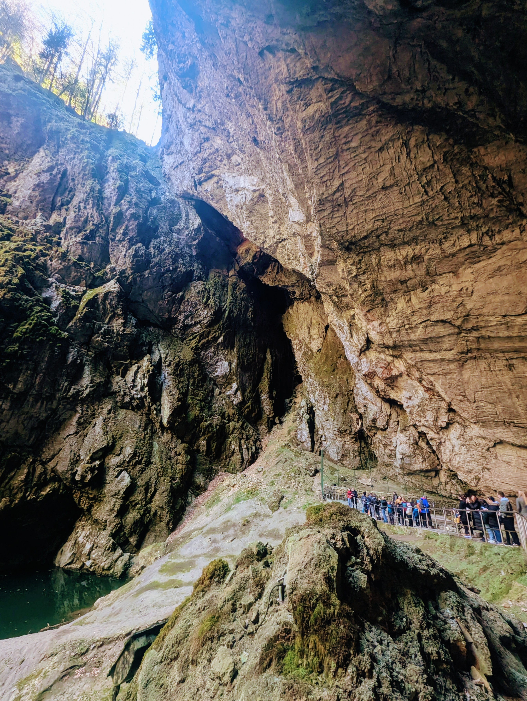
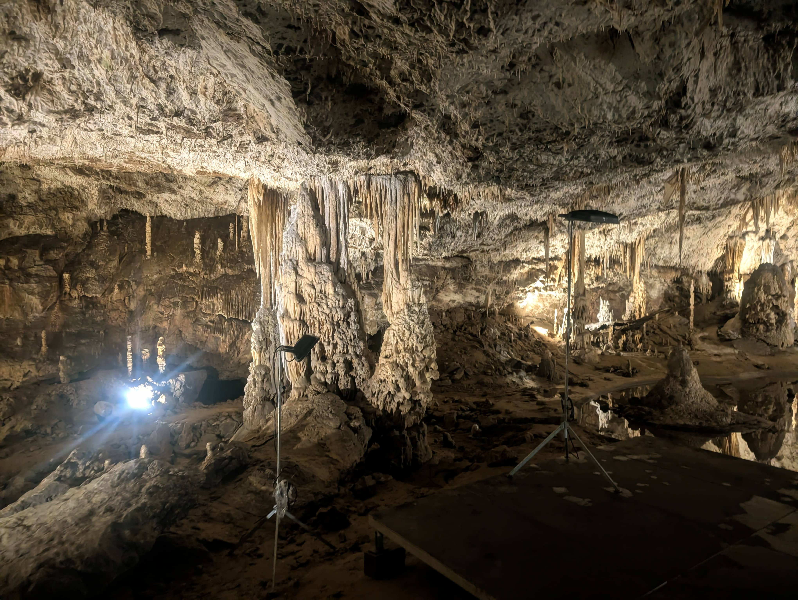
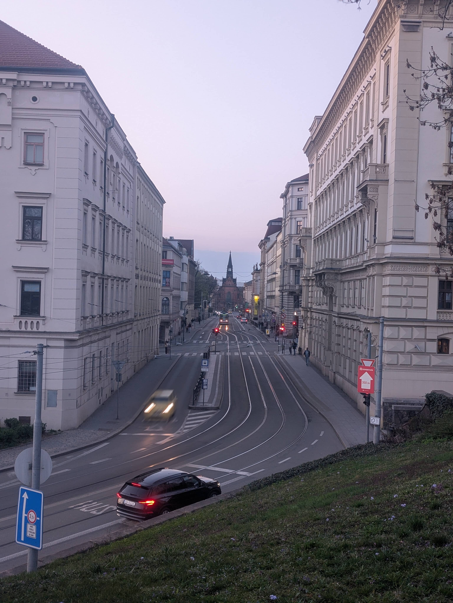

Day 01
Budapest → Brno → Blansko
夜行バスでチェコへ突入。
バス停のベンチで寝てたら、朝おじさんに叩き起こされる。
-
23:10 Budapest 発（夜行バス）
深夜出発の夜行バス。
目的地はチェコのBrno。この旅、宿の半分はバスの中。 -
03:30 Brno 到着（真夜中）
着いたのは真夜中の3時半。行き場もないから、バス停の待合室が空いてたのでベンチに横たわって仮眠。
-
07:00 おじさんに叩き起こされる
朝7時ぐらい、知らんおじさんに叩き起こされた。「ここで寝るな」ってことやろな。チェコ語なので詳細不明。
-
08:00 Brno → Blansko 到着
Blansko、Brno郊外の小さい町。今日の目的はここ。
散策して面白いところ見つけたから写真を撮った。
-
10:00 洞窟探検
Blansko周辺の鍾乳洞ツアー。
周りのツアー客は白人だらけで、アジア人1人目立ってた。

-
19:00 Blansko → Brno 到着、少し探索
Brnoに戻る。日が沈む前に、少しだけ街を探索。

-
23:30 プラハ行きバス、出発
2泊目もバスの中。眠りながらプラハへ。